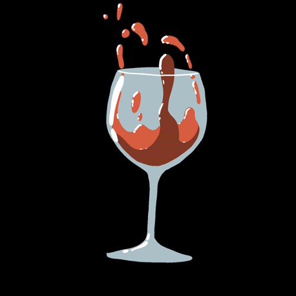

Tipo: arqueossitio
Identificação: Castro do Caires
Imagem: 
Descrição: Povoado fortificado
Lugar: Grovos
Freguesia: Caires
Concelho: Amares
Codadm: 030105
Latitude: 519,9
Longitude: 181,5
Altitude: 320m
Acesso: O acesso ao povoado faz-se a partir do lugar de Caires, por caminho carreteiro, que circunda o monte.
Quadro: O cabeço onde assenta o castro corresponde a um esporão, de vertentes abruptas, situado praticamente na base da encosta Sul do monte de S. Pedro de Fins. A Norte, um profundo talvegue separa o monte de um outro, mais pequeno, onde se encontram também vestígios de ocupação.
Desarq: São perceptíveis 3 linhas de muralhas, que definem outros tantos tabuleiros do povoado. São também visíveis alguns muros circulares e outros rectos, pertencentes a estruturas habitacionais. Na superfície do solo recolheram-se alguns fragmentos de cerâmica indígena, de fabrico micáceo, bem como outros de cerâmica comum romana. O sítio é referido na bibliografia arqueológica desde os princípios do século, devido à descoberta de alguns materiais importantes. Pinho Leal refere o aparecimento, no lugar de Gróvios, localizado na vertente oeste do povoado, de "canos de metal ", tijolos, ânforas e de um possível forno (DIAS 1903, 78). Dados também como procedentes do sítio, são: um baixo-relevo, em granito, representando uma figura equestre masculina, seguramente romana (CARDOSO 1972, 156) e uma pedra lavrada com um motivo geométrico (PEREIRA 1941, 30 ; CARDOSO 1971, 174).
Interprete: povoado fortificado romanizado.
Identificação: Museu Martins Sarmento, em Guimarães e Quinta do lugar do Paço, em Caires.
Bibliografia:
Autor: Manuela Martins
Data: 04-Fev-1998
[Anterior] [Voltar à Página Inicial] [Seguinte]